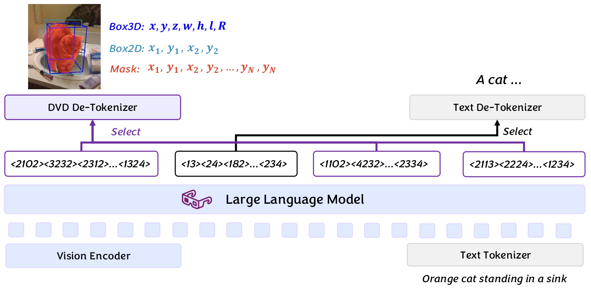

Figure 2: Two-stage training pipeline of PRISM and MiniWAM. In Stage 1 , privileged current–future visual features are compressed by the PRISM encoder into a compact predictive rep...
Figure 2: Tiling of one scene: (a) the 1024 × 1024 1024\times 1024 grid, with the tiles holding vessels, the empty tiles kept (30 %) and those not kept; (b) zoom on 2 × 2 2\times 2...
Figure 2: ContiLNN architecture based on Restore-RWKV ( Yang et al., 2026a ) . (A) Bi-CfC modules augment selected feature pathways; the paired CT sequences show the same seven obs...
Figure 2: SCOPE overview. Our method extracts control-ready Gaussian tubes from a diffusion predictor. Here, we use a multimodal diffusion backbone (left) that produces K K nominal...
Figure 2 : The overall pipeline of HRIL. Given M M modalities, we apply data augmentation to construct two views X ′ X^{\prime} and X ′′ X^{\prime\prime} , and encode them into uni...
能否用同一紧凑表示统一不同维度的结构化感知输出，并降低推理延迟。
对当前主题的关键意义在于：可把破裂前兆区域编码成紧凑框、掩码与置信度 token，比较文本坐标与 DVD 的输出长度、定位误差和端到端延迟。
方法与关键创新

Figure 3: Overview of DVD. We extend the MLLM vocabulary with learned unified tokens and train the model following standard LLM paradigms without modifications. At inference, we se...
Figure 2: Overview of VersaCamVLA. Stage I: A scene encoder aggregates posed RGB views into fixed-size scene tokens, with a training-only decoder predicting RGB, semantic, and edge...
![Figure 2: Two-stage training pipeline of PRISM and MiniWAM. In Stage 1 , privileged current–future visual features are compressed by the PRISM encoder into a compact predictive representation L t L_{t} , shaped through inverse action prediction and feature reconstruction. The corresponding world tokens remain clean while the action tokens are corrupted for conditional action prediction. In Stage 2 , the PRISM encoder is frozen and provides compact world-modeling targets; MiniWAM jointly denoises the world and action tokens using its world and action experts. Solid and hatched tokens denote clean and noised tokens, respectively. Language and proprioceptive conditioning are omitted for clarity.](../assets/figures/7f67461b4a926806.png)
![Figure 2: Tiling of one scene: (a) the 1024 × 1024 1024\times 1024 grid, with the tiles holding vessels, the empty tiles kept (30 %) and those not kept; (b) zoom on 2 × 2 2\times 2 grid tiles with the vessel boxes and one vessel-centered tile; (c) traceability record of the highlighted vessel, which appears in one grid tile and several centered tiles, and the inverse index listing the vessels of that grid tile. Images shown at 1/8 and 1/2 of the native resolution. Maxar Products Standard (2A) Imagery © 2017–2024 Maxar Technologies.](../assets/figures/3081ecbd2cc42a11.png)
![Figure 2: ContiLNN architecture based on Restore-RWKV ( Yang et al., 2026a ) . (A) Bi-CfC modules augment selected feature pathways; the paired CT sequences show the same seven observed positions, ordered back to front. (B) Backbone blocks, the bidirectional liquid operator, and gated residual or serial insertion. Reverse traversal preserves feature–interval pairing (Eq. 10 ). (C) Training supervision. High-quality references supervise reconstruction and first- and second-order inter-slice intensity differences. A frozen 2D backbone supplies single-slice predictions for distillation during training; the ContiLNN backbone and Bi-CfC modules remain trainable.](../assets/figures/7797aa99a2494807.png)
![Figure 2: SCOPE overview. Our method extracts control-ready Gaussian tubes from a diffusion predictor. Here, we use a multimodal diffusion backbone (left) that produces K K nominal trajectories with explicit mode probabilities. The SCOPE Precision Head (right) wraps each trajectory in a structured precision matrix 𝚲 k \boldsymbol{\Lambda}_{k} , learned by distilling the score model’s terminal curvature via Hessian-vector products at training time. At inference, Gaussian tubes are produced with low overhead after diffusion decoding.](../assets/figures/b9c6d904b3b9286e.png)
![Figure 2 : The overall pipeline of HRIL. Given M M modalities, we apply data augmentation to construct two views X ′ X^{\prime} and X ′′ X^{\prime\prime} , and encode them into unimodal representations { 𝐙 m ′ } m = 1 M \{{\mathrm{\mathbf{Z}}}_{m}^{\prime}\}_{m=1}^{M} and { 𝐙 m ′′ } m = 1 M \{{\mathrm{\mathbf{Z}}}_{m}^{\prime\prime}\}_{m=1}^{M} , as well as fused representations 𝐙 f ′ {\mathrm{\mathbf{Z}}}_{f}^{\prime} and 𝐙 f ′′ {\mathrm{\mathbf{Z}}}_{f}^{\prime\prime} . The contrastive objective ℒ InfoNCE \mathcal{L}_{\text{InfoNCE}} performs cross-view alignment between each unimodal representation and the fused one, while ℒ syn \mathcal{L}_{\text{syn}} and ℒ align \mathcal{L}_{\text{align}} are computed from unimodal representations in both views.](../assets/figures/07a02cc80a7bbc6a.png)